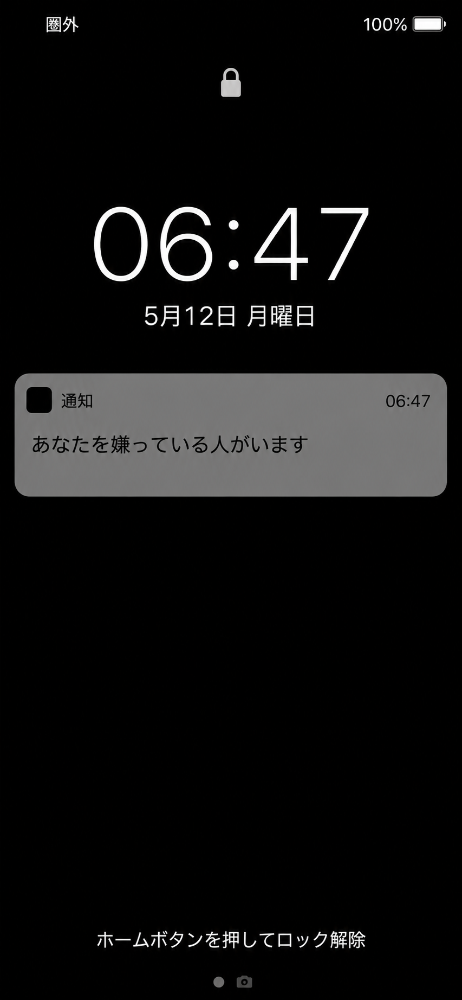
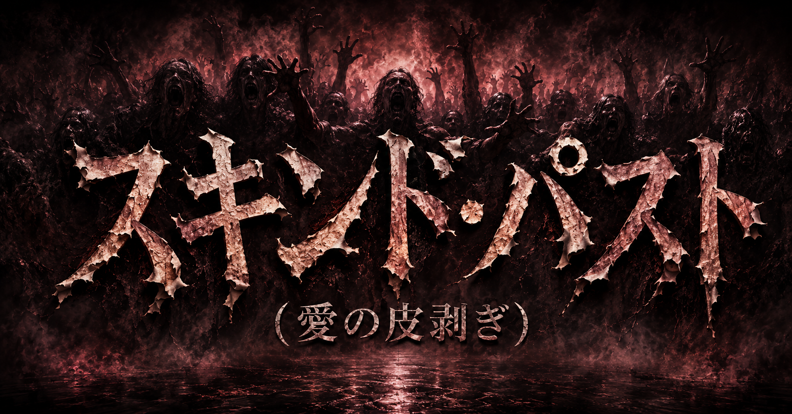
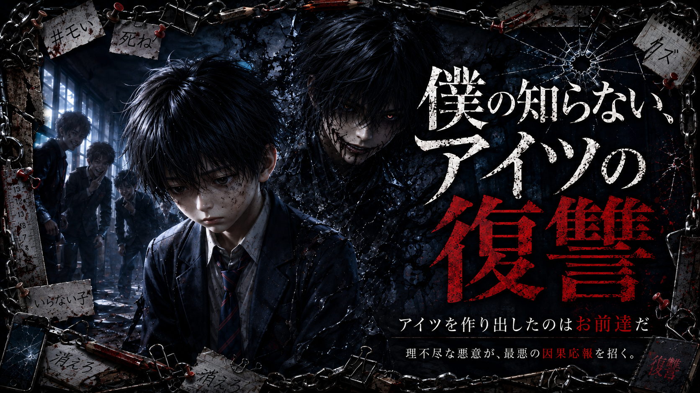
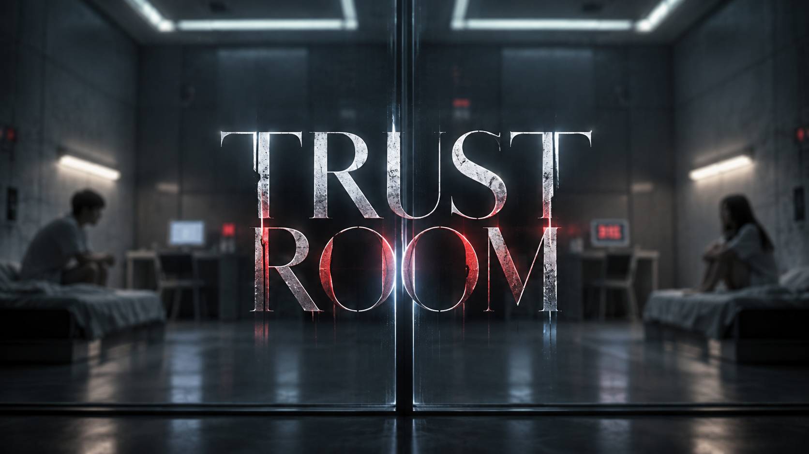
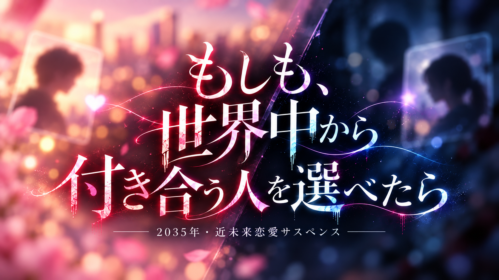
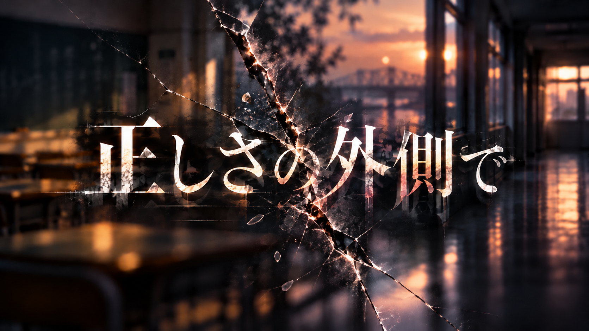

縫魔妖斗のオリジナル作品
小説一覧・あらすじ
縫魔妖斗のオリジナル小説を、表紙とあらすじで紹介。ホラー、心理・人間ホラー、近未来恋愛サスペンス、ドタバタコメディまで、気になる作品の詳細からnoteで読めます。

小説 · 全11話完結
スキンドパスト
不倫相手と肌を重ねた「面積」と「時間」の分だけ、己の本物の皮膚が自動的に剥がれ落ちる究極のナノマシン刑『ジャスティス・スキン』。どれだけ隠そうとしても、浮気をした翌朝には血と肉が剥き出しになるため一発で露見する。生き延びるには全身に包帯を巻き、「私は不倫をしました」と世間に証明しながら激痛に耐えるしかない。 第1話で描かれるのは、どこかでその現実を舐めていたサラリーマン・滝口…
スキンドパストのあらすじ・読書リンク
小説 · 全3話完結
僕の知らないアイツの復讐
私立誠藍初等・中等部（小中一貫校）に通う白石紡（しらいし つむぎ）は、誰にでも優しい大人しい少年。女子からも人気があったが、それがクラスのリーダー格・木村の激しい嫉妬を買い、小学5年生の夏から壮絶ないじめを受けるようになる。 精神の限界を迎えた紡が「助けて」…と願った夜から………【アイツ】が生まれてしまった。 それから約1年、紡がいじめを受けた翌日には、なぜかいじめっ子たちに…
僕の知らないアイツの復讐のあらすじ・読書リンク
心理・人間ホラー · 全5話
TRUST ROOM
結婚して半年の新婚夫婦・今村亮介と真帆。 二人は、一人100万円の報酬が支払われる 「強い信頼関係を持つ二人の共同意思決定研究」へ参加する。 二泊三日を過ごすのは、 透明な一枚の仕切りによって二つに分けられた試験室。 顔は見える。 声も聞こえる。 すぐ隣にいる。 それなのに、触れることだけができない。 そして二人の端末には、 相手には見えない「選択」が表示され始める。 相手が…
TRUST ROOMのあらすじ・読書リンク
近未来恋愛サスペンス
もしも世界中から付き合う人を選べたら
2035年。AIとベーシックインカムが社会に定着し、世界公認のマッチングシステムによって、誰もが世界中から恋人候補を自由に選べる時代になった。 趣味、性格、生活習慣、恋愛観――ほとんどすべてが見える世界。 ただし、誰にでも一つだけ「非公開項目」がある。 その内容を相手に尋ねることは、世界共通のルールで禁止されていた。 未龍哲雄は、システムを通じて霧嶋すみれと出会い、本気で恋に…
もしも世界中から付き合う人を選べたらのあらすじ・読書リンク
痛快ドタバタコメディ · 全2話完結
時速11kmの大脱走 ― 老人ホーム脱獄大作戦 ―
日本最大級の老人ホーム、その最上階88階。 91歳のミヨ、87歳の正男、79歳のトシ、89歳のハナ。 安全で快適。何不自由ない老後――ただし、退屈だった。 ミヨ【ここから逃げっぺ】 その一言から始まる、平均年齢86.5歳の大脱走。 監視カメラ、電子ロック、警備員、痛む腰、遠い耳。そして最高速度11kmの電動カート。 老人だからって、静かにしてるとは限らない。 笑って、遊んで、…
時速11kmの大脱走 ― 老人ホーム脱獄大作戦 ―のあらすじ・読書リンク
小説
正しさの外側で
あなたにとって、正しさとは何ですか。
「正しいことをしていれば、報われる」 そう信じていた少年は、ある出来事をきっかけに「正しさ」を疑い始める。 怒り、噂、恐怖、無関心、後悔。 人から生まれた感情は、ときに形を持ち、怪異や都市伝説として現れる。 主人公は一冊の「証言ノート」に人々の声を記録しながら、小学生から中学生、高校生、大学生、そして弁護士へと成長していく。 誰が正しく、誰が間違っているのか。 その答えを決め…
正しさの外側でのあらすじ・読書リンク